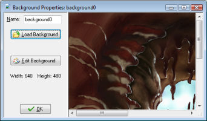

To create a background resource in your game, use the item Create Background in the Resources menu or use the corresponding button on the toolbar. The following form will pop up.

At the top-left you can indicate the name of the background. You are strongly recommended to give every background (and other resource) a descriptive name.
Press the button Load Background to load a background image. A file selector is shown in which you can select the background you want. At the right of the dialog you can indicate whether you want to make the background opaque (that is, remove any transparent parts), whether to remove the background, making it transparent (default not), and whether to smooth the edges of the background, which can improve its appearance when it is partially transparent. When you are happy with the result press Open to load the background. Game Maker supports many image formats. Background images cannot be animated!
You can change the background or create a new one using the button Edit Background. This will open an extensive image editor. For information on how to use the image editor see the section on Editing images.
Be careful with large backgrounds. Some old graphics cards cannot handle images that are larger than the screen. So preferably keep your background images smaller than 1024x1024.
| Converted from CHM to HTML with chm2web Pro 2.85 (unicode) |